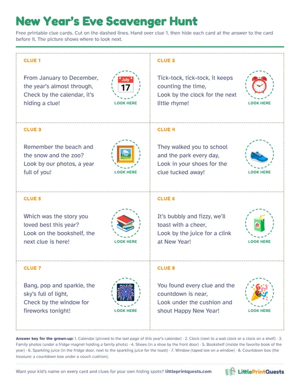

New Year’s Eve scavenger hunt for kids
Midnight is a long way off when you’re 4. This hunt gives New Year’s Eve its own kid-sized countdown: eight clues that look back at the year, ending in a countdown box of hats and noisemakers, with the big cheer at a time little ones can actually stay up for.
Make a personalized countdown hunt8 free rhyming clues
Hide each clue at the answer to the clue before it. Start about an hour before your countdown, and the last card leads to the countdown box.
Clue 1
From January to December, the year’s almost through,
Answer: Calendar. Hide it: Pinned to the last page of this year’s calendar.
Check by the calendar, it’s hiding a clue!Clue 2
Tick-tock, tick-tock, it keeps counting the time,
Answer: Clock. Hide it: Next to a wall clock or a clock on a shelf.
Look by the clock for the next little rhyme!Clue 3
Remember the beach and the snow and the zoo?
Answer: Family photos. Hide it: Under a fridge magnet holding a family photo.
Look by our photos, a year full of you!Clue 4
They walked you to school and the park every day,
Answer: Shoes. Hide it: In a shoe by the front door.
Look in your shoes for the clue tucked away!Clue 5
Which was the story you loved best this year?
Answer: Bookshelf. Hide it: Inside the favorite book of the year.
Look on the bookshelf, the next clue is here!Clue 6
It’s bubbly and fizzy, we’ll toast with a cheer,
Answer: Sparkling juice. Hide it: In the fridge door, next to the sparkling juice for the toast.
Look by the juice for a clink at New Year!Clue 7
Bang, pop and sparkle, the sky’s full of light,
Answer: Window. Hide it: Taped low on a window.
Check by the window for fireworks tonight!Clue 8
You found every clue and the countdown is near,
Answer: Countdown box. Hide it: The treasure: a countdown box under a couch cushion.
Look under the cushion and shout Happy New Year!
Free printable clue cards
All 8 clues on one sheet with picture hints for pre-readers, dashed cut lines and an answer key for the grown-up doing the hiding. Print it, cut it, hide it.

Download the free printable (PDF)
An early countdown kids can stay up for
Most kids under 8 won’t make it to midnight, and they don’t need to. Pick a countdown time that fits bedtime, like 7 or 8 o’clock, and treat it as the real thing. Little kids can’t read a clock, so nobody will know.
- Start an hour before. Twenty minutes of hunt, a few minutes to open the countdown box, then hats on for the countdown.
- Count down out loud from 10. Everyone shouts the numbers, then “Happy New Year!” with noisemakers and a juice toast.
- Noon Year’s Eve. For toddlers or a playdate, run the whole hunt in the morning and count down to lunch at 12.
The look-back twist
Every clue on this trail is something from the year: the calendar, the clock, the family photos, the shoes that walked to school, the favorite book. At each stop, the finder says one favorite thing from the year, and a grown-up writes it on a slip. Put the slips in a jar or an envelope marked with next year’s date and open it next New Year’s Eve. Little ones can draw theirs.
What to put in the countdown box
Any shoebox works. Wrap it, write the new year on the lid and fill it with things for the countdown:
- Party hats and paper crowns for everyone.
- Noisemakers or a pot and wooden spoon for each kid.
- Paper confetti they make themselves with a hole punch (it vacuums up easily).
- Sparkling juice and fancy plastic cups for the toast.
- A new calendar to decorate with birthdays and big days for next year.
Leave out balloons for kids under 8: popped or uninflated balloons are a choking risk. Skip glow sticks for kids who still chew things.
More winter play
A countdown is the start of every rocket launch, so an Outer Space hunt or a pretend Mission Control fits the night too. For the cold days after, try a snowy Ice Kingdom hunt. Our printed hunts have your kid’s name on every page and arrive by email in minutes.
- Outer Space scavenger hunt
- Mission Control pretend play
- Ice Kingdom scavenger hunt
- Christmas Eve scavenger hunt
Make a personalized countdown hunt
Questions
How do you celebrate New Year’s Eve with young kids?
Pick an early countdown time, like 7 or 8 o’clock, and treat it as midnight. A scavenger hunt an hour before fills the evening, ends with hats and noisemakers in a countdown box, and gets everyone to bed on time.
What is a Noon Year’s Eve?
A New Year’s countdown held at 12 noon instead of midnight, so toddlers and preschoolers can join in. Run the hunt in the morning and count down to lunch.
Can a 3 year old do a New Year’s Eve hunt?
Yes. Read the rhymes out loud and use the free printable, which has a picture of the hiding spot on every card so little ones can find it themselves.
More hunt ideas
- Birthday party hunt
- Ages 3 to 5
- Ages 6 to 8
- Thanksgiving hunt
- Classroom hunt
- Christmas Eve hunt
- Apartment Scavenger Hunt
- Indoor Scavenger Hunt for a House
- Backyard Scavenger Hunt
- Dinosaur hunt
- Superhero hunt
- Pirate hunt
- Outer Space hunt
- Princess & Knights hunt
- Unicorn hunt
- Mermaid hunt
- Construction hunt
- Pet Vet hunt
- Easter hunt
- Halloween hunt
- Christmas hunt
- Valentine’s hunt
- Firefighter hunt
- Ice Kingdom hunt
- Race Car hunt
- Pizza Shop hunt
- Burger Shop hunt
- Grocery Store hunt
- Post Office hunt
- Library hunt
- Police Station hunt
- Dentist hunt
- Pet Shop hunt
- Coffee Shop hunt
- Italian Restaurant hunt
- Auto Shop hunt
- Play Kitchen hunt
- Doctor hunt
- Puppet Theater hunt
- Secret Agent hunt
- Dress-Up hunt
- Ice Cream hunt
- Airport hunt